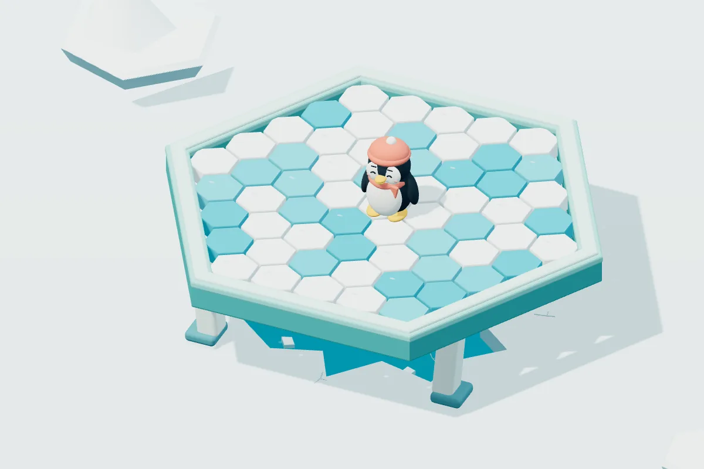

企鹅敲敲敲
免费在线玩企鹅敲敲敲：轮流敲掉冰块，别让企鹅掉进水里。3D 物理模拟，2 至 4 人同屏对战，也可与电脑对手玩，约 3 至 10 分钟一局，手机、平板、电脑play instantly。
2–4 人同屏游玩，约 3–10 分钟一局。

玩法
- 每回合选择一块冰敲击，等冰面稳定后轮到下一位玩家。
- 让企鹅失去支撑并落水的当前玩家失败，其余玩家获胜。
- 可选择 37 块或 61 块冰场，并把玩家 2 至 4 设为电脑对手。
想短暂休息、体验敲冰块的紧张感，或找一款与家人朋友同屏轮流玩的短局派对游戏时，可以考虑企鹅敲敲敲。